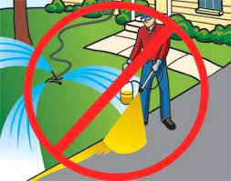

We are delighted to present worlwide the solution about the issues in the world.

Reduce Pesticides
Always try to minimize your chemical pesticides and herbicides because generally both are very harmful to the environment. Go online or visit gardening stores or landscaping companies in your town to learn about more safer replacements for these products. It can be done quite easily.

Reduce, Reuse and Recycle
Citizens should reduce the usage of air-conditioners as it will release harmful gases , for instant ozone-depleting chlorofluorocarbons which will result in reducing air pollution. One may make no difference, but when carried out together, massive changes can be made. Moving on, reuse reusable items like plastic bags, bottles, boxes and more is also one of the way to reduce pollution/p>

Reduce, Reduce The Use of Vehicle
Reducing the usage of vehicles on road will also help in reducing air pollution on earth. The more the usage of vehicles, the more the harmful gases released into the air such as hydrocarbons, nitrogen oxides, carbon monoxides, and sulfur dioxides which will cause serious air pollutions. The usage of cars, lorries and motorbikes should be drastically reduced as the gases released by these vehicles can also contribute in green house effect. However, these pollutions can be reduced when citizens practice the habit of car-pooling and the usage of public transport like bus, trains, monorails and many more. In addition, citizens can walk or cycle to near destinations instead of driving which will lead to lesser air pollution. Therefore, reducing the usage of vehicles by no doubt can reduce air and sound pollutions.